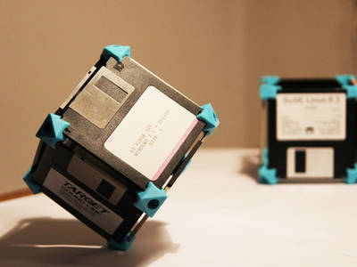
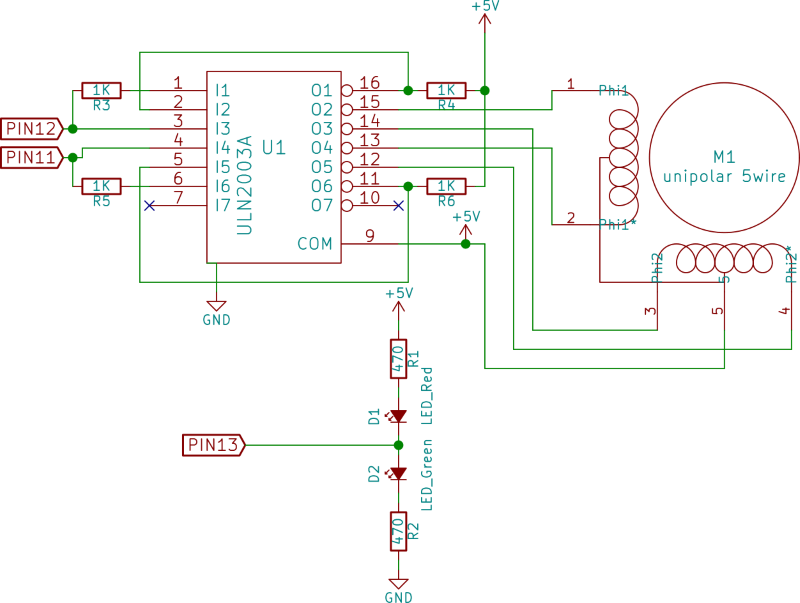

2015-12-01 - Nº 31

Editorial
Aqui está a Newsletter Nº 31 no seu formato habitual. Foram adicionados botões de partilha nas várias redes sociais, se gostar da Newsletter partilhe-a!
Todas as Newsletters encontram-se indexadas no link.
Esta Newsletter tem os seguintes tópicos:
Esta semana foi lançado o Raspberry Pi Zero, uma versão muito simplificada do Raspberry Pi 1, por um preço muito interessante. Saiu a versão final do Kicad - a 4.0. Na Newsletter desta semana falamos de vários projetos de maker que poderão ser interessantes de explorar. Iremos construir um circuito que é um Controlador de Motor Unipolar.
 João Alves ([email protected])
João Alves ([email protected])
O conteúdo da Newsletter encontra-se sob a licença  Creative Commons Attribution-NonCommercial-ShareAlike 4.0 International License.
Creative Commons Attribution-NonCommercial-ShareAlike 4.0 International License.
Novidades da Semana ^
Raspberry Pi Zero: The $5 Computer
"Of all the things we do at Raspberry Pi, driving down the cost of computer hardware remains one of the most important. Even in the developed world, a programmable computer is a luxury item for a lot of people, and every extra dollar that we ask someone to spend decreases the chance that they’ll choose to get involved. The original Raspberry Pi Model B and its successors put a programmable computer within reach of anyone with $20-35 to spend. Since 2012, millions of people have used a Raspberry Pi to get their first experience of programming, but we still meet people for whom cost remains a barrier to entry. At the start of this year, we began work on an even cheaper Raspberry Pi to help these people take the plunge. Today, I’m pleased to be able to announce the immediate availability of Raspberry Pi Zero, made in Wales and priced at just $5. Zero is a full-fledged member of the Raspberry Pi family, featuring: 1Ghz ARM11, 512MB of LPDDR2 SDRAM, micro-SD card slot, mini-HDMI socket, Micro-USB sockets for data and power, unpopulated 40-pin GPIO header, size 65mm x 30mm x 5mm."
-
"We’ve just released the long-awaited KiCad stable release, version 4.0.0! The announcement can be read on the developer’s mailing list archive. KiCad binaries will be available for download for Windows, OSX and Linux in the near future. Changes Brief A short summary of updates between KiCad 4.0.0 and the so called old stable follows below: Major Items New graphics rendering backend GAL (OpenGL and Cairo) [currently pcbnew only and does not yet support all legacy tools] New s-expression based pcb format (.kicad_pcb) New footprint library format (.pretty folder with .kicad_mod footprints) Updated footprint editor (only usable with GAL renderer) More advanced footprint manager concept called footprint library table (fp-lib-table) Ability to download footprints on the fly from git repositories Official libraries are now stored on github and regularly updated Awesome/Advanced Push and Shove (PnS) router (only usable with GAL renderer) Interactive differential trace routing and tuning Interactive trace length tuning Much more realistic 3D board rendering Intelligent library search with preview in Eeschema Initial Python api for Pcbnew Infrastructure updates New website Continuous integration tools via Jenkins (http://ci.kicad-pcb.org ) Nightly builds for windows, OS X, fedora, ubuntu, and openSUSE (see downloads for information) Minor items Wording of many dialogs and errors has been improved Some excessive dialogs have been removed New icons for many tools New schematic library browser Docs now available in several different formats online (http://docs.kicad-pcb.org ) More intelligent component search in EESchema Component rescue helper to identify when components have changed in EESchema and rescue the old version Undo limit default increased and now configurable Note Symbols have changed size, been renamed, etc to follow the new KiCad library conventions so you need to take care when working with older schematics if you used the symbols packaged with KiCad."
Ciência e Tecnologia ^
Simulating fermionic particles with superconducting quantum hardware
"Digital quantum simulation is one of the key applications of a future, viable quantum computer. Researchers around the world hope that quantum computing will not only be able to process certain calculations faster than any classical computer, but also help simulate nature more accurately and answer longstanding questions with regard to high temperature superconductivity, complex quantum materials, and applications in quantum chemistry. A crucial part in describing nature is simulating electrons. Without electrons, you cannot describe metals and their conductivity, or the interatomic bonds which hold molecules together. But simulating systems with many electrons makes for a very tough problem on classical computers, due to some of their peculiar quantum properties."
Researchers create blackest material ever made
"A team of researchers at King Abdulla University of Science and Technology in Saudi Arabia has made the blackest material ever created by human beings. As they note in their paper published in Nature Nanotechnology, the idea for the material came from the all-white cyphochilus beetle. As the researches also note, it is likely impossible to create the perfect black material that absorbs all of the energy that strikes it, and then emits it without any loss of energy. Still, scientists would like to come closer because it is believed that such materials could help in creating better or more efficient devices, such as solar collectors. In this new effort, the team bested the blackness of previous materials using carbon nanotubes by emulating what they found when studying the all-white cyphochilus beetle. The result was a an extremely tiny nanoparticle rod resting on an equally tiny nanoparticle sphere (30 nm diameter), which was able to absorb approximately 98 to 99 percent of the light in the spectrum between 400 and 1,400 nm, which meant that it is able to absorb approximately 26 percent more light than any other known material—and it does so from all angles and polarizations."
Creating an artificial sense of touch through electrical stimuli
"A new study led by University of Chicago neuroscientists brings them one step closer to building prosthetic limbs for humans that recreate a sense of touch through a direct interface with the brain. The research, published Oct. 26 in the Proceedings of the National Academy of Sciences, shows that artificial touch is highly dependent on several features of electrical stimuli, such as the strength and frequency of signals. It describes the specific characteristics of these signals, including how much each feature needs to be adjusted to produce a different sensation. “This is where the rubber meets the road in building touch-sensitive neuroprosthetics,” said Sliman Bensmaia, associate professor of organismal biology and anatomy and senior author of the study. “Now we understand the nuts and bolts of stimulation, and what tools are at our disposal to create artificial sensations by stimulating the brain.”"
Modelos 3D ^
Com a disponibilidade de ferramentas que permitem dar azo a nossa imaginação na criação de peças 3D e espaços como o thingiverse para as publicar, esta rubrica apresenta alguns modelos selecionados que poderão ser úteis.
Floppy disk construction kit (http://www.thingiverse.com/thing:134807)

Bring out your old floppy disks and build things with it! The 'normal' piece has 3 sides and will fit a corner of a cube. The 'two-side' piece let's you make an open box.
- Print 8 normal pieces to make a cube
- Print 4 normal pieces and 4 two-side pieces to make an open box
You can print the pieces without support. The cylinder cutout however leaves a few floating threads.
Still looking for a good way to connect parts together to make a big object! All ideas are welcome :-)
Trammel of Archimedes ( aka rotoLOL ) (http://www.thingiverse.com/thing:1152584)
Another "just for fun" object Inspired by this gif i found online, https://imgur.com/JYxsdPq
RotoLOL
i quickly draw the essential lines in tinkercad.
I called it "rotoLOL", let me know if has another "real" name.
have fun
[Update] thanks to GRay_111111 i've found and updated the "real" name .. Trammel of Archimedes https://en.wikipedia.org/wiki/Trammel_of_Archimedes
IC Pin Straightener (http://www.thingiverse.com/thing:1111554)
A simple tool for straightening the legs of integrated circuits, based on similar tools.
REQUIRES:
- 1x: 3D-printed parts
- 2x: #4-40 x 1.25" socket head cap screw (McMaster #92196A302)
- 4x: Compression spring, 3/8" long x 0.3" OD (McMaster #1986K77)
Note that the screws and springs can be bought locally, or substituted for similar parts.
ASSEMBLY:
- Clean up the 3D-printed pieces as necessary
- Optional but recommended: tap the smaller holes with a 4-40 tap to prevent splitting
- Insert the screws into the piece with the counterbored holes
- Assemble as shown in the photo - push the pieces together with one hand while threading the two screws
- Adjust the screws until the desired tension and travel distance is achieved
- Use it!
Circuitos ^
Aqui é apresentado um circuito simples que poderá ser construído com componentes.
Controlador de Motor Unipolar
Hoje irão ser construídos dois circuitos para controlar motores Unipolares.
Um motor unipolar é um tipo de motores de passo (Step) descrito como necessitando apenas uma fonte de corrente. Por oposição os motores bipolares requerem duas fontes de corrente para se moverem.
A complexidade deste tipo de motores é que são alimentados por fontes de corrente DC e requerem circuitos digitais para que as sequências de energização sejam accionadas na ordem certa. O Feedback nem sempre é necessário para o controlo, e este pode ser garantido através do uso de encoders que garantem a precisão. São motores que são habitualmente usados quando se requer precisão em detrimento da velocidade.
Tipicamente os motores Unipolares têm 5 ou 6 fios. Quando têm 5 significa que o fio de corrente está ligado internamente às duas bobines.
Para controlar o motor iremos usar um IC ULN2003A que é uma array darlington. Este pode fazer sink até 500mA por pino.
Um transístor Darlington é uma configuração de dois transístores NPN bipolares que permitem que haja amplificação da corrente por ambos os transístores. Existem mesmo deste tipo de transístores para poupança de espaço. Este tipo de transístor tem o nome do seu inventor Sidney Darlington. O IC ULN2003A além da configuração de transístor Darlington tem adicionalmente diodo de supressão de cargas indutivas e está preparado para funcionar com tensões de 3.3V ou 5V. É um integrado muito interessante para utilizações onde é necessário fazer o sink da corrente.
O primeiro circuito que será construído irá usar 4 pinos do micro-controlador. O segundo irá usar apenas 2 pinos.
Dica:
- Pode igualmente usar-se um IC alternativo que é o ULN2803A que tem 8 transístores Darlignton.
Sequência para 4 pinos (Rotação positiva):
| Tempo | P1 | P2 | P3 | P4 |
|---|---|---|---|---|
| 1 | 1 | 1 | 0 | 0 |
| 2 | 0 | 1 | 1 | 0 |
| 3 | 0 | 0 | 1 | 1 |
| 4 | 1 | 0 | 0 | 1 |
Sequência para 2 pinos (Rotação positiva):
| Tempo | P1 | P2 |
|---|---|---|
| 1 | 0 | 1 |
| 2 | 1 | 1 |
| 3 | 1 | 0 |
| 4 | 0 | 0 |
Para mover o motor na direção contrária deverá aplicar-se a sequência do fim para o principio.
Esquemático
Este é o circuito que usa 4 pinos do micro-controlador:
Este circuito usa apenas 2 pinos do micro-controlador:

Componentes (BOM):
Circuito 1:
- 1x IC ULN2003A
- 2x Resistência de 470 Ohms (R1,R2)
- 1x LED de 5mm Vermelho (D1)
- 1x LED de 5mm Verde (D2)
- 1x Motor Unipolar 28BYJ48 DC 5V (M1)
Circuito 2:
- 1x IC ULN2003A
- 4x Resistência de 1K Ohms (R3-R6)
- 2x Resistência de 470 Ohms (R1,R2)
- 1x LED de 5mm Vermelho (D1)
- 1x LED de 5mm Verde (D2)
- 1x Motor Unipolar 28BYJ48 DC 5V (M1)
O motor usado para as experiências foi o 28BYJ48 DC 5V Este motor tem a particularidade de o fio 2 e 3 estarem trocados. Sendo a sequência 1,3,2,4. A alimentação do motor é feita no pino COM do IC.
Pin-out dos IC/Componentes
Código
Os sketch devem ser carregados num Arduino através do seu IDE (foi usada a versão 1.6.6). Nos sketchs foi usada a biblioteca _Stepper.
O sketch para o circuito 1. Este funciona na configuração de 4 pinos.
#include <Stepper.h>
const int motorSteps = (32 * 64); // 28BYJ48 DC 5V
const int motorPin1 = 12;
const int motorPin2 = 11;
const int motorPin3 = 10;
const int motorPin4 = 9;
const int ledPin = 13;
// initialize of the Stepper library:
Stepper myStepper(motorSteps, motorPin1, motorPin2, motorPin3, motorPin4);
void setup() {
myStepper.setSpeed(10);
pinMode(ledPin, OUTPUT);
}
void loop() {
// Step forward
digitalWrite(ledPin, HIGH);
myStepper.step(motorSteps/2);
delay(500);
// Step backward
digitalWrite(ledPin ,LOW);
myStepper.step(-motorSteps/2);
delay(500);
}
// Sketch uses 2,292 bytes (7%) of program storage space. Maximum is 32,256 bytes.
// Global variables use 35 bytes (1%) of dynamic memory, leaving 2,013 bytes for local variables. Maximum is 2,048 bytes.
O sketch para o circuito 2. Este funciona na configuração de 2 pinos.
#include <Stepper.h>
const int motorSteps = (32 * 64); // 28BYJ48 DC 5V
const int motorPin1 = 12;
const int motorPin2 = 11;
const int ledPin = 13;
// initialize of the Stepper library:
Stepper myStepper(motorSteps, motorPin1, motorPin2);
void setup() {
myStepper.setSpeed(10);
pinMode(ledPin, OUTPUT);
}
void loop() {
// Step forward
digitalWrite(ledPin, HIGH);
myStepper.step(motorSteps/2);
delay(500);
// Step backward
digitalWrite(ledPin ,LOW);
myStepper.step(-motorSteps/2);
delay(500);
}
// Sketch uses 2,232 bytes (6%) of program storage space. Maximum is 32,256 bytes.
// Global variables use 35 bytes (1%) of dynamic memory, leaving 2,013 bytes for local variables. Maximum is 2,048 bytes.
Links úteis:
- Darlington transistor
- Stepper Motors
- Introduction to Stepper Motors
- Small Stepper Motor and Driver Board
Projetos Maker ^
Diversos Projetos interessantes.
Garage Door Keypad
"Remote garage door openers are great but there were times I need access to the garage and did not have the remote with me. I therefore designed a simple keypad with 4 digit access codes to allow myself, my family and friends to gain quick access to the garage when a remote is not at hand."
LCD clock with 4" display
"The clock is built on a 4" (101 mm) LCD displays OD-103 manufactured by Orient Display. The LCD provides high contrast of digits and easy reading from a large distance. The unit runs on batteries and can also be powered from mains. Here is how it looks under direct sun."
100MHz frequency counter with LCD display
"This is the same as the previous frequency counter but the output is on the 16x2 LCD display."
An ARDUINO based JPEG Camera with IR and PIR
"Let’s equip Arduino with a serial-interface JPEG Camera with IR and try two applications: the first one saves shots (on a SD-card) at regular intervals while the second uses a PIR sensor to detect intrusions and photograph what happens."
The Light Clock (IoT)
"Welcome to The Light Clock, part art-piece, part timepiece, it's a modern take on the classic analogue clock. Where a traditional clock face uses hands to tell the time, The Light Clock turns your whole wall into a timepiece through a striking display of coloured light. You have the power to choose from millions of colours, allowing you to perfectly complement your existing décor, or simply to match your mood."
Reachargeable Sound Reactive LED Peace Pendant
"With all the madness going on in the world right now, a LED sound reactive peace pendant would help radiate some love"
4 Digits Thermometer Using DS18B20 Digital Sensor
"Counter based on PIC16F628A . Included C code and circuit diagram. Displays -55 to 125 centigrade. The temperature is read every 15 seconds, can be changed in the code. The math is using integers to calculate the degrees and the tenths of degrees are calculated separately. The 7 segment LED is common cathode, 4 separate digits can be used with segments a to g linked."
Contactless Infrared Thermometer (Pyrometer)
"The device is designed for contactless measuring and monitoring temperature of objects. It is built on Melexis MLX90614 sensor and can measure temperatures in the range from -70°C to +380°C with 0.5°C accuracy and 0.01°C resolution. The period of measurements can be set in the menu from 1 sec to 1 min in 10 sec increments. It is also possible to record the temp measurements and upload them to a computer via the serial interface through X1 and an external level converter."
1Wamp Electric Guitar Amplifier - Open Hardware
"1Wamp is a one Watt small guitar amplifier based on a JFET guitar pre-amp, the Big Muff Pi tone control and the LM386 power amplifier. This portable amp is an open hardware project designed by ElectroSmash using only free and open-source tools."
Cloud Cam: Internet-Connected Security Camera
"The cloud cam is a project to build an internet-connected security camera using a Raspberry Pi and Pi camera. The camera can detect motion and upload images to Dropbox's cloud storage service, or the beta of Adafruit IO, Adafruit's internet of things service."
Compras ^
Artigos do ebay ou de outras lojas online que poderão ser úteis em projetos. A informação aqui presente apenas serve para ajudar na aquisição dos componentes. O altLab não tem qualquer intervenção/participação em qualquer negócio aqui apresentado.
10pcs ULN2003AN ULN2003A ULN2003APG ULN2003 DIP-16 Array-7 NPN Darlington
(http://www.ebay.co.uk/itm/280844203965) - US $1.13
Item description:
ULN2003AN ULN2003A ULN2003APG ULN2003 DIP-16 Array-7 NPN Darlington
QTY:10PCS
That's all Folks!